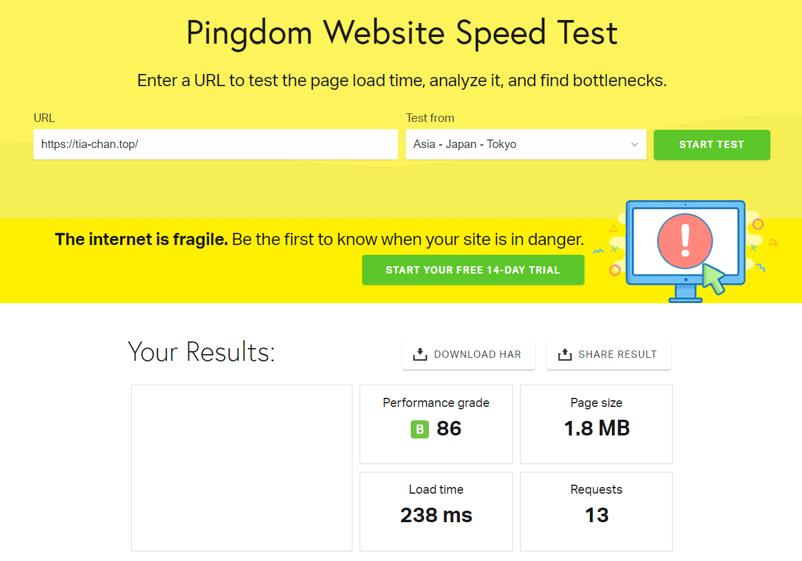

如果你没有时间，又想快速的搭建博客，可以使用 Hugo 静态页面生成器
介绍
有哪些优点呢？
-
文章使用 Markdown 格式
-
相较于动态页面，访问速度快，占用低
-
简单，快速部署
给大家看看访问速度 ><
安装
如果你没有 winget 包管理器可以先在 微软商店 安装
利用 winget 安装 hugo
|
|
新建模板
右键桌面，选择在终端中打开
|
|
切换目录
|
|
主题
在 hugo theme 中寻找你喜欢的主题
找到后，点击 download 跳转到 github 仓库
点击 Code 菜单栏，复制仓库地址
克隆到 blog 文件夹的 themes 文件夹中
|
|
进入克隆好的文件夹，转到 exampleSite 文件夹，找到 content 文件夹和 config.yaml 文件，分别复制到 blog 文件夹下
如遇到提示信息，选择替换目标中的文件
最后删除 blog 文件夹下的 config.toml 文件
使用与配置
运行Hugo
|
|
打开地址：
|
|
如图，我这里使用的是hugo-theme-stack主题，需要配置自定义样式
基础设置
在修改 blog 文件夹下的 config.yaml 文件
|
|
baseurl 表示你的域名
languageCode 可以修改为 zh-cn
title 表示网站名称
copyright 表示网站名称
languages 中可以看到三种语言，en、zh-cn、ar，删除两个你不需要的语言
zh-cn 中的title表示侧边栏/网站的名称，weight表示语言所在的权重（由于删除了两种语言，建议改为1）
修改后，如果你打开页面发现报错了，没关系，是因为你还没有设置默认内容语言（如下）
DefaultContentLanguage 需要把语言改为 zh-cn
修改头像
在 config.yaml 文件中我们可以看见下列代码
|
|
可以看出存放头像图片的路径是 blog\assets\img\avatar.png
修改一下就好啦
如果不想要 emoji 可以删掉，subtitle 表示个性签名，你可以自定义
修改关联社交账号
在 config.yaml 文件中我们可以看见下列代码
|
|
identifier 表示id序列，随便写
name 表示社交平台的名字
url 表示社交平台账户的名字
icon 表示图标 （存储在 blog\themes\你的主题文件\assets\icons中）
社交图标可以自定义，默认只有两个，你可以在 tablericons 找到你所需要的图标

这里以邮箱图标为例（我才，才不会说举邮箱的例子是因为有点特殊呢！！），找到后，点击一下，显示 copied 就表示复制成功啦
在 blog\themes\你的主题名称\assets\icons 中创建一个svg格式的文件，文件名随便你取，我取的是 brand-email.svg，把复制的东东，粘贴到文件中就可以啦
|
|
icon 中填写的是你刚刚创建svg文件所取的名字
邮箱的url比较特殊，并不是直接填邮箱就可以了，需要在前面加上 mailto:
创建文章
|
|
创建的文件存放在 blog\content\post\你的文章名称\index.md 中
打开 index.md 可以看到下图所示

引入眼帘的，明显有一部分是代码块，下面是一片空白
这里的代码块比较特殊，人们把它称为 front matter, 即文件的元信息
title 表示文章名称
date 表示日期
draft 表示草稿，值为true表示在首页显示文章，false表示不显示（如果删去draft则表示显示）
初始化的 front matter 默认包含这三部分，另外还有一些其他属性
|
|
分别表示文章的分类，标签，封面
注意：字符串前面的，是四个空格，有时候你可能会用tab键来表示四个空格，但在这里可能会出错，因为有些环境下tab键会表示8个空格
空白处就可以用markdown语法编辑文章啦
你可以一边编辑，一边看看网页的变化
修改侧边栏索引

由于显示语言的不一致，需要修改一下
打开 blog\content\page 路径，可以看见侧边栏索引所在的目录
进入你需要修改的索引目录，把 index.md重命名为 index.zh-cn.md（已经有了index.zh-cn.md就不需要了）
编辑 index.zh-cn.md文件中的front matter的title就可以修改侧边栏索引啦
删除多余文章
删除 blog\content\post 路径中多余的文件夹就可以了
修改关于页面
编辑 blog\content\page\about\index.zh-cn.md 文件
修改链接页面
编辑 blog\content\page\links\index.zh-cn.md 文件
删除 front matter 下方的内容
|
|
links下的title 表示关联的网站标题（友情链接之类的）
description 表示描述信息
website 表示站点地址
image 表示关联的网站图片链接
生成静态页面
|
|
生成的静态页面存储在 public 文件夹中
如果你没有服务器可以考虑把 public 中的静态页面部署到 github 之类的托管网站
网上有很多这类的教程就不多说啦
下一篇，将介绍如何把静态页面部署到 nginx 中
完结撒花！！
つずく